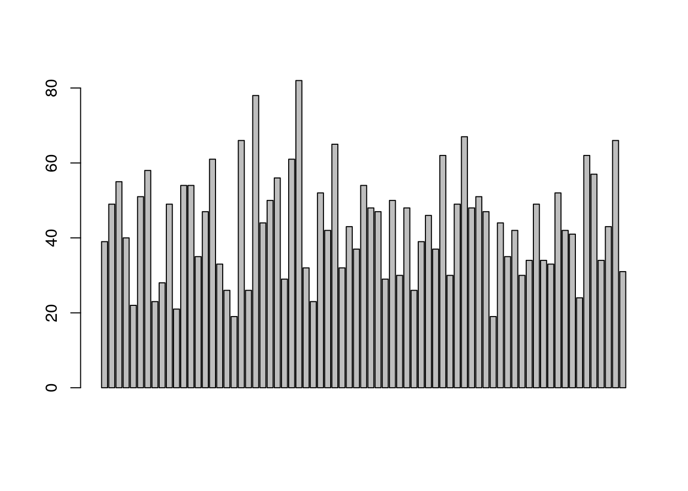

Last updated: 2018-03-09
Code version: 5b36f9d
The data that we’ll be using for this example workflowr project is ttp patients from University of Alabama Birmingham. We’ll start from using the raw data. We’re going to use the readxl package. Let’s take a look at what a few of the column names look like.
# load data
library(readxl)
ttprawdat <- read_xlsx("~/Documents/Projects/Huy/ttp_pm/data/TTP Database only labREV_LS 1242018-HP.xlsx", sheet = 1)
colnames(ttprawdat)[1:5][1] "Serial #"
[2] "TPE( 1), plasma (P) and platelet (PP) prior to sample collection"
[3] "Age"
[4] "Sex ( F=1, M=0)"
[5] "Race (W/AA)" As you can see… they are not the prettiest variable names for data analysis (i.e. they are not short). Extremely human readable though. So we need to do some data management to make it easy for us to do analysis later on. First, we’re going to select only those columns that we’re going to use for analysis. In this case we will be filtering patients that have the column TPE( 1) ... = 1. Additionally, duplicate subjects are recorded beyond Serial # > 91 so we need to select those before 92. Lastly we need to select only the variables that we’ll be working with. In this case the autocomplete functionality of Rstudio really comes in handy as all we need to do is write a few of the alphabet and let the tab key figure out which variables we want.
## Identify outcome columns
library(dplyr)
Attaching package: 'dplyr'The following objects are masked from 'package:stats':
filter, lagThe following objects are masked from 'package:base':
intersect, setdiff, setequal, unionttpselected <- ttprawdat %>%
# exclude patients with value of 2nd column as 1
filter(`TPE( 1), plasma (P) and platelet (PP) prior to sample collection` != 1) %>%
# rows 93 to 102 are duplicate values so for now exclude those people
filter(`Serial #` < 92) %>%
# select variables to use
select(Age, `Sex ( F=1, M=0)`, `Race (W/AA)`, `ABO type`, `CNS Sign/Symps (1/0)`, `Abd pain (1/0)`, `Chest pain (1/0)`, `Disease 1`, HTN, DM, Preg, Neoplasia, HIV, HSV, HCV, SLE, Transplant, Smoking, `Rec Drugs`, `Time to plt stabilization`, pltstab7, LOSthis, outcome1, mort, wbc, Neutrophil, culture, hb, hct, plt, ldh, cr, pt, ptt, fibr, ddimer, protein, alb, tbili, ibili, trop, inhibitor, A13Igg, hnp, histone, pai, vwfag, VWFCBA, activevwf, VWFRatio, ic3b, c59, c4d, bb, vincristineTHIS, CyclophosphamideTHIS, `rituxan this`, `eculizumab this`, `bortezomib-this`) We need to change the column names as we mentioned earlier:
colnames(ttpselected) <- c("age","sex","race","btype","cmb_cns","cmb_abd","cmb_chst","disease","htn","dm","preg","neoplasia","hiv","hsv","hcv","sle","transplant","smoking","rec_drug","time_plt_stbl","plt_stb_7", "los" ,"outcome1","mort","sbc","neutrophil","culture","hb","hct","plt","ldh","cr","pt","ptt","fibr","ddimer","protein","alb","tbili","ibili","trop","inhib", "a13igg","hnp","histone","pai","vwfag","vwfcba","activevwf","vwfratio","ic3b","c59","c4d","bb","vincristine","cyclophosphamide","rituxan","eculizumab","bortezomib")And finally we need to convert some of the variable from factor to numeric or character (this will be handy when we run the machine learning algorithms.)
colnames(ttpselected) <- c("age","sex","race","btype","cmb_cns","cmb_abd","cmb_chst","disease","htn","dm","preg","neoplasia","hiv","hsv","hcv","sle","transplant","smoking","rec_drug","time_plt_stbl","plt_stb_7", "los" ,"outcome1","mort","sbc","neutrophil","culture","hb","hct","plt","ldh","cr","pt","ptt","fibr","ddimer","protein","alb","tbili","ibili","trop","inhib", "a13igg","hnp","histone","pai","vwfag","vwfcba","activevwf","vwfratio","ic3b","c59","c4d","bb","vincristine","cyclophosphamide","rituxan","eculizumab","bortezomib")
# change variable type (i.e. from character to numeric and etc)
ttpselected <- ttpselected %>%
# change certain variables
mutate_at(., .vars = c("time_plt_stbl", "ptt","protein", "alb", "trop", "inhib", "rituxan", "ddimer","sbc","neutrophil", "outcome1"), .funs=as.numeric ) %>%
# Mutate at variables
mutate_at(., .vars = c("sex","race","btype","cmb_cns","cmb_abd","cmb_chst","disease","htn","dm","preg","neoplasia","hiv","hsv","hcv","sle","transplant","smoking","rec_drug","outcome1","mort","culture", "vincristine","cyclophosphamide","rituxan","eculizumab","bortezomib"), .funs = as.character) %>%
# create outcome2 based on whether or not outcome 1 is > 0
mutate(outcome2 = as.character(ifelse(outcome1 > 0, 1, 0))) %>%
# to add survival interpretation
mutate(time = ifelse(is.na(time_plt_stbl), los, time_plt_stbl),
status = ifelse(!is.na(time_plt_stbl), 1, 0))Warning in evalq(as.numeric(time_plt_stbl), <environment>): NAs introduced
by coercionWarning in evalq(as.numeric(alb), <environment>): NAs introduced by
coercionWarning in evalq(as.numeric(inhib), <environment>): NAs introduced by
coercionAlthough not standard practice, we’re going to create a variable that houses all categorical analogs of the previous data (which has biomarkers measured as continuous variables).
# To create data for categorical variables...
ttpselectedcat <- ttprawdat %>%
# exclude patients with value of 2nd column as 1
filter(`TPE( 1), plasma (P) and platelet (PP) prior to sample collection` != 1) %>%
# rows 93 to 102 are duplicate values so for now exclude those people
filter(`Serial #` < 92) %>%
# select variables to use
dplyr::select(Age, `Sex ( F=1, M=0)`, `Race (W/AA)`, `ABO type`, `CNS Sign/Symps (1/0)`, `Abd pain (1/0)`, `Chest pain (1/0)`, `Disease 1`, HTN, DM, Preg, Neoplasia, HIV, HSV, HCV, SLE, Transplant, Smoking, `Rec Drugs`, `Time to plt stabilization`, pltstab7, LOSthis, outcome1, mort, wbc, Neutrophil, culture, hb, hct, plt, ldh, cr, pt, ptt, fibr, ddimer, protein, alb, tbili, ibili, `Low Haptoglobin (1/0)`, `Trop (nml <0.04; nml = 1; high = 2`, `HNP Hi =1; Low =2 (Range 1.8-13.7)`, `histone (hi=1; low=2; range 0.15-6.912)`, `PAI (Hi=1; low = 2) Range 53.3-2160`, `Vwf Ag (%?) Hi=1; low = 2 range 59-273.5`, `Vwf CBA (%?) Hi=1; low = 2 range (45.95-286)`, `Active VwF Hi=1; low = 2 range (44.21-187.9)`, `Vwf Ratio Hi=1; low = 2 range (0.55-2.94)`, `ic3b Hi=1; low = 2 range (6.06-15.7)`, `C5-9 Hi=1; low = 2 range (0.2-2.7)`, `C4d Hi=1; low = 2 range (1.4-4.1)`, `Bb Hi=1; low = 2 range (0.8-1.1)`, vincristineTHIS, CyclophosphamideTHIS, `rituxan this`, `eculizumab this`, `bortezomib-this`)
colnames(ttpselectedcat) <- c("age","sex","race","btype","cmb_cns","cmb_abd","cmb_chst","disease","htn","dm","preg","neoplasia","hiv","hsv","hcv","sle","transplant","smoking","rec_drug","time_plt_stbl","plt_stb_7","los", "outcome1","mort","sbc","neutrophil","culture","hb","hct","plt","ldh","cr","pt","ptt","fibr","ddimer","protein","alb","tbili","ibili","trop","inhib","hnp","histone","pai","vwfag","vwfcba","activevwf","vwfratio","ic3b","c59","c4d","bb","vincristine","cyclophosphamide","rituxan","eculizumab","bortezomib")
# change variable type (i.e. from character to numeric and etc)
ttpselectedcat <- ttpselectedcat %>%
# change certain variables
mutate_at(., .vars = c("time_plt_stbl", "ptt","protein", "alb", "inhib", "rituxan", "ddimer","sbc","neutrophil", "outcome1"), .funs=as.numeric ) %>%
# create outcome2 based on whether or not outcome 1 is > 0
mutate(outcome2 = as.character(ifelse(outcome1 > 0, 1, 0))) %>%
mutate_at(., .vars = c("trop","hnp","histone","pai","vwfag","vwfcba","activevwf","vwfratio","ic3b","c59","c4d","bb"),
.funs = funs(ifelse(. == 2, 0, ifelse(. == 0, 1, 2)))) %>%
# Mutate at variables
mutate_at(., .vars = c("trop","hnp","histone","pai","vwfag","vwfcba","activevwf","vwfratio","ic3b","c59","c4d","bb"), .funs = as.character)%>%
# to add survival interpretation
mutate(time = ifelse(is.na(time_plt_stbl), los, time_plt_stbl),
status = ifelse(!is.na(time_plt_stbl), 1, 0))Warning in evalq(as.numeric(time_plt_stbl), <environment>): NAs introduced
by coercionWarning in evalq(as.numeric(alb), <environment>): NAs introduced by
coercionNow we can do some data exploring using the DataExplorer package.
library(DataExplorer)
graphics::barplot(ttpselected$age)
#DataExplorer::plot_str(ttpselected)We can see that we have some continuous and categorical variables.
sessionInfo()R version 3.4.2 (2017-09-28)
Platform: x86_64-pc-linux-gnu (64-bit)
Running under: Ubuntu 17.10
Matrix products: default
BLAS: /usr/lib/x86_64-linux-gnu/blas/libblas.so.3.7.1
LAPACK: /usr/lib/x86_64-linux-gnu/lapack/liblapack.so.3.7.1
locale:
[1] LC_CTYPE=en_US.UTF-8 LC_NUMERIC=C
[3] LC_TIME=en_US.UTF-8 LC_COLLATE=en_US.UTF-8
[5] LC_MONETARY=en_US.UTF-8 LC_MESSAGES=en_US.UTF-8
[7] LC_PAPER=en_US.UTF-8 LC_NAME=C
[9] LC_ADDRESS=C LC_TELEPHONE=C
[11] LC_MEASUREMENT=en_US.UTF-8 LC_IDENTIFICATION=C
attached base packages:
[1] stats graphics grDevices utils datasets methods base
other attached packages:
[1] DataExplorer_0.5.0 bindrcpp_0.2 dplyr_0.7.4
[4] readxl_1.0.0
loaded via a namespace (and not attached):
[1] igraph_1.1.2 Rcpp_0.12.15 knitr_1.20
[4] bindr_0.1 magrittr_1.5 munsell_0.4.3
[7] colorspace_1.3-2 R6_2.2.2 rlang_0.1.6.9003
[10] plyr_1.8.4 stringr_1.3.0 networkD3_0.4
[13] tools_3.4.2 grid_3.4.2 gtable_0.2.0
[16] data.table_1.10.4-3 git2r_0.21.0 htmltools_0.3.6
[19] lazyeval_0.2.1 yaml_2.1.18 rprojroot_1.3-2
[22] digest_0.6.15 assertthat_0.2.0 tibble_1.4.2
[25] gridExtra_2.3 ggplot2_2.2.1 htmlwidgets_1.0
[28] glue_1.2.0 evaluate_0.10.1 rmarkdown_1.9
[31] stringi_1.1.6 compiler_3.4.2 pillar_1.1.0
[34] cellranger_1.1.0 scales_0.5.0 backports_1.1.2
[37] pkgconfig_2.0.1 This R Markdown site was created with workflowr